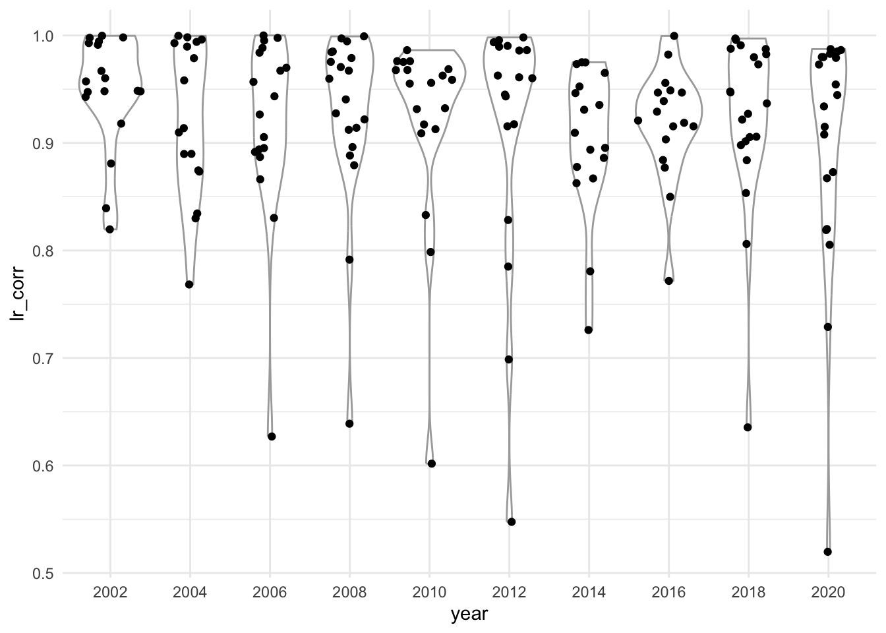

Code
library(conflicted)
library(tidyverse)
conflicts_prefer(dplyr::filter, .quiet = TRUE)
library(glue)
library(knitr)
library(ggforce) # violin plots
library(reactable)ESS linking example – see also sections “Expert survey validation” and “Performance of Party Facts linking” in manuscript.
library(conflicted)
library(tidyverse)
conflicts_prefer(dplyr::filter, .quiet = TRUE)
library(glue)
library(knitr)
library(ggforce) # violin plots
library(reactable)ches_raw <- haven::read_dta("data-raw/ches-1999-2019_CHES_dataset_meansv3-td4m.dta")
ess_raw <- read_rds("data/05-ess-ches.rds")
ess_all_raw <- read_rds("data/02-ess-select.rds")Chapel Hill Expert Survey (CHES) series
ches_raw |>
summarise(
countries = n_distinct(country),
parties = n(),
.by = year
)| year | countries | parties |
|---|---|---|
| 1999 | 14 | 142 |
| 2002 | 23 | 171 |
| 2006 | 24 | 188 |
| 2010 | 24 | 203 |
| 2014 | 28 | 245 |
| 2019 | 28 | 247 |
Number of countries and parties that are included in ESS and CHES for an ESS round.
ess_raw |>
summarize(
year = first(year),
countries_n = n_distinct(cntry),
parties_n = n_distinct(prtv),
ches_year = first(ches_year),
ches_parties_n = n_distinct(ches_id),
.by = c(essround)
) |>
arrange(essround)| essround | year | countries_n | parties_n | ches_year | ches_parties_n |
|---|---|---|---|---|---|
| 1 | 2002 | 18 | 196 | 2002 | 131 |
| 2 | 2004 | 18 | 190 | 2002 | 128 |
| 3 | 2006 | 18 | 191 | 2006 | 132 |
| 4 | 2008 | 21 | 215 | 2006 | 143 |
| 5 | 2010 | 20 | 241 | 2010 | 157 |
| 6 | 2012 | 20 | 239 | 2010 | 151 |
| 7 | 2014 | 18 | 216 | 2014 | 138 |
| 8 | 2016 | 18 | 216 | 2014 | 133 |
| 9 | 2018 | 24 | 299 | 2014 | 184 |
| 10 | 2020 | 23 | 284 | 2019 | 169 |
Overview country coverage ESS and CHES trend file
cntry_ches_n <-
ess_raw |>
summarise(ches_cntry = n_distinct(cntry), .by = essround)
cntry_ches_none <-
ess_all_raw |>
distinct(essround, cntry) |>
anti_join(ess_raw |> distinct(essround, cntry)) |>
arrange(cntry) |>
summarise(ches_missing = paste0(cntry, collapse = ", "), .by = essround)
ess_all_raw |>
summarise(ess_cntry = n_distinct(cntry), .by = essround) |>
left_join(cntry_ches_n) |>
left_join(cntry_ches_none) |>
arrange(essround)| essround | ess_cntry | ches_cntry | ches_missing |
|---|---|---|---|
| 1 | 22 | 18 | CH, IL, LU, NO |
| 2 | 25 | 18 | CH, EE, IS, LU, NO, TR, UA |
| 3 | 23 | 18 | CH, CY, NO, RU, UA |
| 4 | 29 | 21 | CH, CY, HR, IL, NO, RU, TR, UA |
| 5 | 27 | 20 | CH, CY, HR, IL, NO, RU, UA |
| 6 | 29 | 20 | AL, CH, CY, IL, IS, NO, RU, UA, XK |
| 7 | 21 | 18 | CH, IL, NO |
| 8 | 23 | 18 | CH, IL, IS, NO, RU |
| 9 | 29 | 24 | CH, IS, ME, NO, RS |
| 10 | 30 | 23 | CH, IL, IS, ME, MK, NO, RS |
ess_party <-
ess_raw |>
filter(!is.na(prtv)) |>
summarise(
lr_mean = mean(lrscale, na.rm = TRUE),
lr_sd = sd(lrscale, na.rm = TRUE),
lr_n = n(),
ches_lr = first(ches_lr),
.by = c(cntry, year, prtv, prtv_party, ches_year),
)Country-year correlations for ESS and CHES left-right positions in each ESS round with at least 3 parties and 10 responses per party in a country.
ESS left-right party positions are calculated as mean values of lrscale variables for respondents that voted for the party (prtv*).
ess_party_filter <-
ess_party |>
na.omit() |>
filter(lr_n >= 10) |>
mutate(n = n(), .by = c(cntry, year)) |>
filter(n >= 3)
corr <-
ess_party_filter |>
summarise(
n_parties = first(n),
lr_corr = cor(lr_mean, ches_lr, use = "pairwise.complete.obs"),
.by = c(cntry, year, ches_year)
) |>
arrange(cntry, year)
# fivenum(corr$lr_corr)The table summarizes the country-year correlations by providing 0%, 10%, 25%, 50%, 75%, and 100% quantiles. The results are visualized in Figure 4.1.
tbl_out <-
corr |>
summarise(
p0 = quantile(lr_corr, 0),
p10 = quantile(lr_corr, 0.10),
p25 = quantile(lr_corr, 0.25),
p50 = quantile(lr_corr, 0.50),
p75 = quantile(lr_corr, 0.75),
p100 = quantile(lr_corr, 1),
.by = year
) |>
mutate(across(p0:p100, \(x) round(x, 2))) |>
rename(ess_year = year) |>
arrange(ess_year)
write_csv(tbl_out, "figures-tables/table-3_ches-validation.csv")
tbl_out| ess_year | p0 | p10 | p25 | p50 | p75 | p100 |
|---|---|---|---|---|---|---|
| 2002 | 0.82 | 0.87 | 0.94 | 0.95 | 0.99 | 1.00 |
| 2004 | 0.77 | 0.83 | 0.87 | 0.91 | 0.99 | 1.00 |
| 2006 | 0.63 | 0.86 | 0.89 | 0.93 | 0.98 | 1.00 |
| 2008 | -0.35 | 0.79 | 0.90 | 0.94 | 0.98 | 1.00 |
| 2010 | 0.45 | 0.78 | 0.91 | 0.96 | 0.97 | 0.99 |
| 2012 | 0.55 | 0.76 | 0.92 | 0.96 | 0.99 | 1.00 |
| 2014 | 0.73 | 0.83 | 0.88 | 0.91 | 0.95 | 0.98 |
| 2016 | 0.77 | 0.87 | 0.90 | 0.92 | 0.95 | 1.00 |
| 2018 | 0.26 | 0.81 | 0.90 | 0.93 | 0.98 | 1.00 |
| 2020 | 0.35 | 0.56 | 0.82 | 0.93 | 0.98 | 0.99 |
Country-year correlations by country // interactive table
if (knitr::is_html_output()) {
corr |>
mutate(lr_corr = round(lr_corr, 2)) |>
reactable(searchable = TRUE, striped = TRUE)
}ro_2008 <-
ess_party |>
filter(lr_n >= 10) |>
filter(cntry == "RO", year == 2008) |>
left_join(ess_raw |> distinct(prtv, prtv_party)) |>
mutate(lr_mean = round(lr_mean, 2)) |>
select(-lr_sd)
ro_2008_cor <-
cor(ro_2008$lr_mean, ro_2008$ches_lr, use = "pairwise.complete.obs") |>
round(2)Lowest country-year correlation (-0.35) for ESS Romania 2008.
ro_2008 |>
arrange(prtv) |>
select(cntry, year, prtv, prtv_party, lr_n, lr_mean, ches_year, ches_lr)| cntry | year | prtv | prtv_party | lr_n | lr_mean | ches_year | ches_lr |
|---|---|---|---|---|---|---|---|
| RO | 2008 | RO-4-1-v | PD-L | 517 | 6.95 | 2006 | NA |
| RO | 2008 | RO-4-12-v | Other: PIN | 14 | 5.25 | 2006 | NA |
| RO | 2008 | RO-4-2-v | Alianta PSD-PC | 449 | 3.52 | 2006 | NA |
| RO | 2008 | RO-4-3-v | PNL | 165 | 7.06 | 2006 | 6.7 |
| RO | 2008 | RO-4-4-v | PRM | 31 | 4.54 | 2006 | 7.0 |
| RO | 2008 | RO-4-5-v | UDMR | 67 | 5.94 | 2006 | 6.0 |
| RO | 2008 | RO-4-6-v | PNG-CD | 15 | 6.75 | 2006 | NA |
| RO | 2008 | RO-4-9-v | PNTCD | 32 | 5.62 | 2006 | NA |
corr |>
filter(lr_corr >= 0.5) |>
mutate(year = factor(year)) |>
ggplot(aes(year, lr_corr)) +
geom_violin(colour = "darkgrey") +
geom_sina() +
theme_minimal()